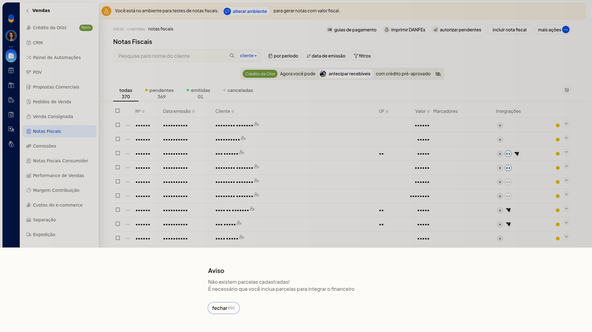
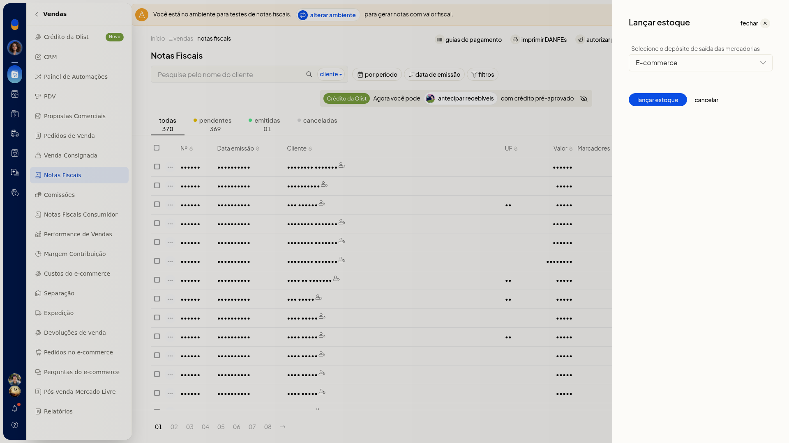

Lançar contas e estoque pela nota
Importante
- Para lançar contas, a nota precisa ter parcelas. Sem parcelas, a tela mostra Não existem parcelas cadastradas e informa que o financeiro não pode ser integrado.
Instruções
Lançar contas
-
Acesse Vendas > Notas Fiscais.
-
No menu de ações da linha da nota, clique em Lançar contas.
-
Se não houver parcelas, leia o aviso Não existem parcelas cadastradas e feche-o. Nenhuma conta é lançada e você permanece na lista.

Lançar estoque
-
Acesse Vendas > Notas Fiscais.
-
No menu de ações da linha da nota, clique em Lançar estoque.
-
Selecione o depósito de saída entre os depósitos já cadastrados.

-
Clique em lançar estoque para seguir com o lançamento, ou em cancelar para voltar sem movimentar o estoque.